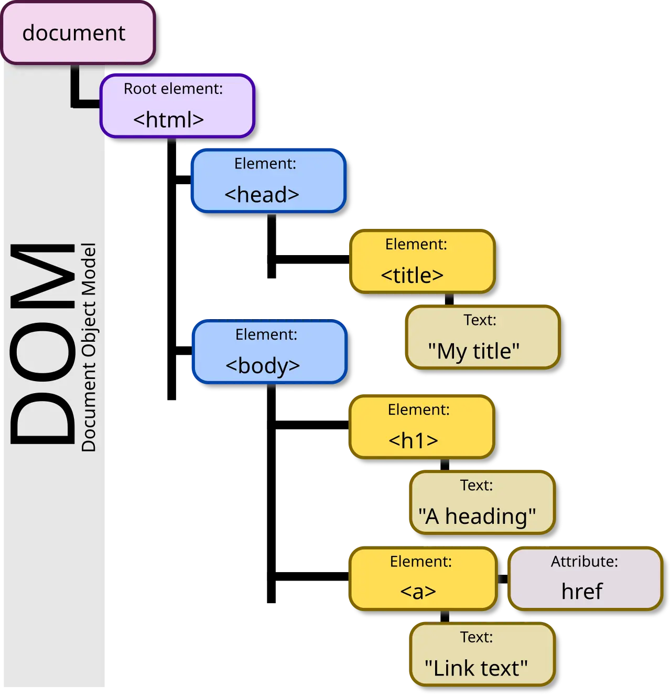

Short answer
The DOM is the tree of elements a browser builds. The source HTML is the text a fetch returned before that tree was changed.
The diagram draws one small tree: document, html, head, a title, body, an h1, and a link with an href, each with sample text such as a heading and link text. That picture is the shape of a parsed document. It is not a trace of this site, and the sample phrases in the boxes are not titles you should copy. SEO Health asks whether a fetch of your URL already contains that kind of tree: a title, a heading, and a real link.
Definition
Parsing turns tags into the tree. Scripts can then append, move, or delete nodes, so the DOM a person inspects in developer tools can differ from the source. A crawler that stores the response stores the source. If the only h1 and the only product link are created after the parse, they are absent from that stored response. The diagram already shows those nodes inside the document. That is the condition you want from the file the server sent, not a condition you hope a later script will invent.
What rendering changes for a crawler
Put the title, the heading, and the crawl-path links in the source a fetch returns.
Compare view-source, or a client that does not run scripts, with the live tree. If the diagram’s pieces exist only in the live tree, the template is building the document too late. A link node needs an href in the source, not only a click handler added later. Sample one product URL. The phrases inside the figure are placeholders from the source page. They are not a measurement and not a recommended title.

What to check
- Title, h1, and href present in view-source
- A no-script fetch that still shows them
- Links that are anchors, not only click handlers
- The sample phrases in the diagram not copied as titles
- One product URL compared as source and as live tree
A practical example
A product name appears as an h1 in developer tools and is missing from view-source, because a script creates the node. The repair renders the h1 and the anchor in the HTML the server sends. A second fetch shows the heading and the href. The tree in the figure remains a teaching drawing of document, head, and body. It is not a screenshot of the product URL.
What this does not claim
A source that matches the tree does not guarantee rankings or citations.
Where Mika Visibility files this
Mika Visibility treats rendering as an SEO Health question: can the important HTML be fetched and compared with and without JavaScript when the template depends on it. That comparison is not a GEO audit and not a market-coverage plan. Findings stay attached to sample URLs. A re-audit after the template change is how the team checks the repair.
The drawing shows the nodes a document should already contain. It is not a crawl log.
FAQ
What is the DOM compared with the source?
The DOM is the tree of elements a browser builds. The source HTML is the text a fetch returned before that tree was changed.
What must the fetch already contain?
Put the title, the heading, and the crawl-path links in the source a fetch returns.
Does a matching source guarantee rankings?
A source that matches the tree does not guarantee rankings or citations.
Next step
Run a structured SEO + GEO audit to see health findings, growth gaps, and a blueprint you can act on.
Clearer entities, answers, evidence, and context make pages easier to understand and reference. Results in any answer product are not guaranteed.